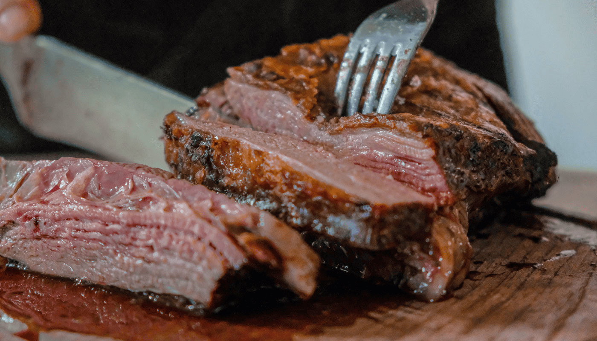

Como Fazer uma Carne Suculenta

Nada melhor do que uma carne macia e cheia de sabor. Siga este guia para garantir suculência e tempero na medida certa.
Carne boa é aquela que a gente corta e já dá pra ver o suquinho escorrendo, né? Pois é, meu bem — deixar a carne suculenta não é sorte, é técnica (e um pouquinho de carinho também). Aqui, a vovó Anastácia revela os segredos que aprendeu ao longo da vida pra garantir uma carne macia, saborosa e molhadinha, seja na panela, no forno ou na grelha. Do jeito certo de temperar até o momento ideal de deixar descansar, cada detalhe faz diferença. Siga as dicas da vovó e prepare-se pra ouvir elogios na mesa!
Ingredientes
- 1 peça de carne (como maminha, alcatra ou fraldinha) – cerca de 1 kg
- Sal e pimenta-do-reino a gosto
- Alho e cebola a gosto
- 2 colheres (sopa) de óleo ou azeite
- Temperos opcionais: alecrim, tomilho, páprica
Dicas Extras
- Descansar a carne depois de cozinhar é essencial para a suculência.
- Selar antes de cozinhar mantém os sucos dentro.
- Experimente diferentes temperos para variar o sabor sem perder a maciez.
Modo de Preparo
- Tempere a carne com sal, pimenta e os temperos de sua preferência, massageando bem para que o sabor penetre.
- Sele a carne em uma frigideira quente com óleo ou azeite, dourando todos os lados rapidamente para selar os sucos.
- Cozinhe na pressão (se for maminha ou corte grande) por 20 a 25 minutos, ou asse no forno até atingir o ponto desejado.
- Retire a carne do fogo e deixe descansar por 5 a 10 minutos antes de cortar. Isso permite que os sucos se redistribuam, mantendo a carne suculenta.
- Fatie contra a fibra da carne para uma textura mais macia.